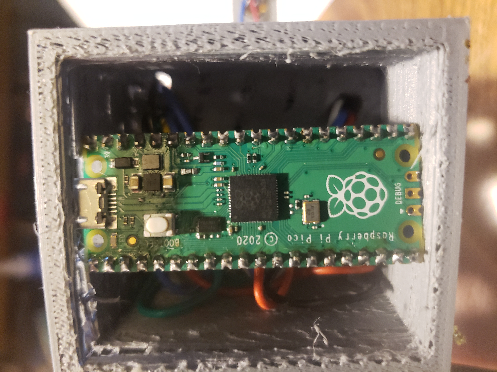
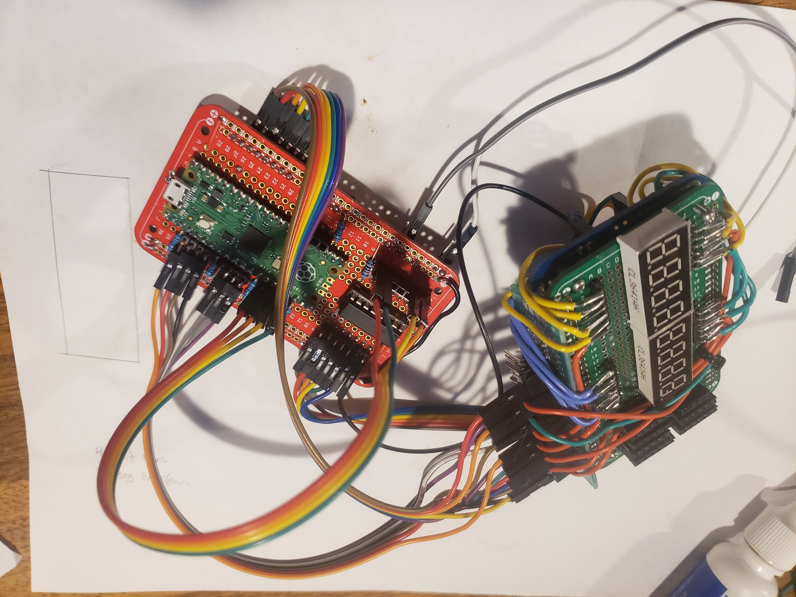

Million Incrementer
Seen left is a RP2040 Rasperry Pi Pico microcontroller gently placed inside of a well made 3D printed housing.
Seen right is a later attempt with smaller components. Without using individual seven segment displays, I opted towards using two conjoined displays, as the amount of wiring and outputs needed to operate was reduced.
Seen right is an early design test during multiplex learning. I was also introduced to using inverter IC's


Seen left is the finished design and working product. Printing will be smoothed out with better equipment.
At time of writing this, but not since finishing, it's been working for 398,817 seconds.